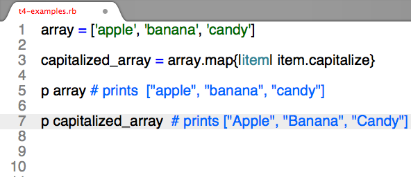
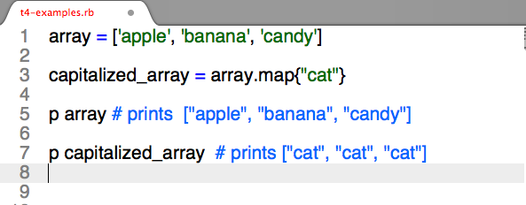

Here’s a brief explainer for #map enumerable method.
Enumerable, for those of you who are like me - i.e. are new to the world of programming and find the word ‘Enumerable’ intimidating, simultaneously elusive and straightforward- just describes methods that go through items in a collection (like arrays and hashes) one at a time and passes those items through a block of code determined by whoever writes the code. (FYI: there is such thing as an Enumerable module, which to my knowledge is just a collection of methods that can be applied to an object. But a luxury of being a newb is the luxury of ignorance, so for now, let’s ignore the module part and refocus on #map).
#Map allows you to transform an array or hash without modifying it. It is an identical method to #collect, so you can think of #map as doing something to an array (or other collection) and then collecting those alterations in a separate, new array.
Here’s the syntax: collection.map {|item_in_the_array| block}
So if we had an array of strings, and wanted to take those strings, capitalize their first letters, and then store those items in a new array, #map is a great method. Check it out:

If no code is placed between the brackets, then whatever is between the bracket is entered into the new array. For example:

More seasoned programmers, according to stack overflow and the rest of the interweb, frequently use #map to better utilize data within arrays. Using #map with a hash is apparently an inefficient way to glean or transform information from a hash.
To get a more seasoned programmer’s take:
http://ruby.bastardsbook.com/chapters/enumerables/
http://rubymonk.com/learning/books/4-ruby-primer-ascent/chapters/44-collections/lessons/96-enumerators-and-enumerables